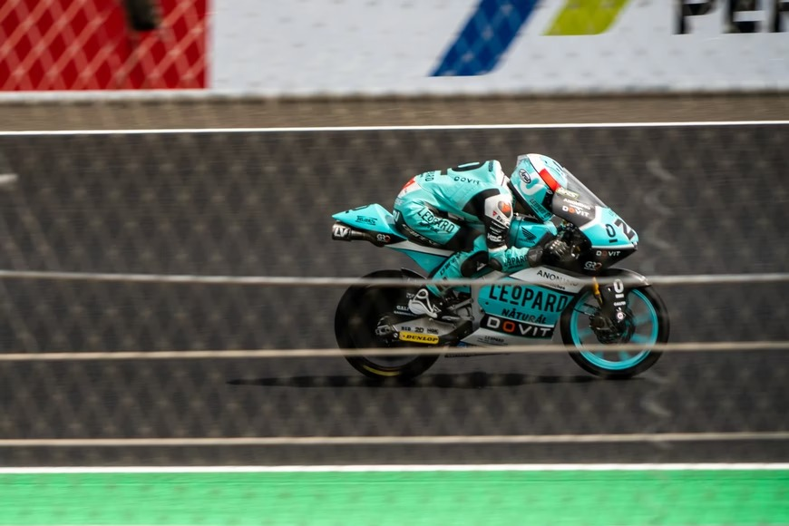
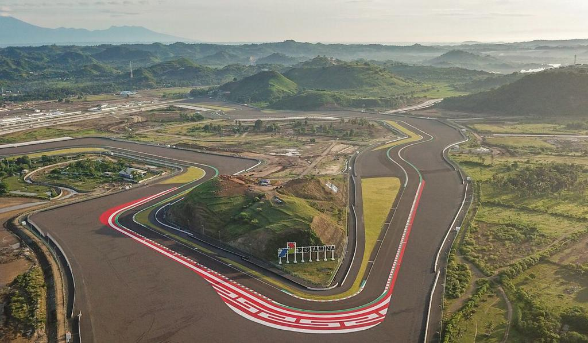
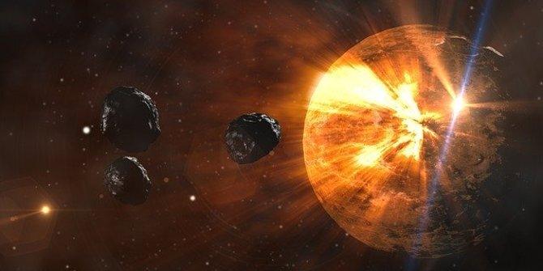

ditulis oleh Farhan Iqratama. pada 4 april 2022.
Hasil Race Moto2 Argentina 2022: Pembalap Pertamina Mandalika SAG Racing Team Finis 10 Besar

Hasil race Moto2 Argentina 2022 telah diketahui pada Senin (4/4/2022) dini hari WIB. Pembalap Tim Mooney VR46, Celestino Vietti keluar sebagai pemenang. Sementara itu, rider Pertamina Mandalika SAG Racing Team, Bo Bendsneyder sukses finis 10 besar.
ditulis oleh Rendy . pada 4 april 2022.
Playstation 5 (PS5) resmi diperkenalkan pada hari ini Jumat (12/6) secara format live streaming. Ada 26 game
Ada Game kelas AAA seperti Spider-Man: Miles Morales, Gran Turismo 7, hingga Godfall diluncurkan untuk generasi terbaru PS5..
ditulis oleh Gordito . pada 4 april 2022.
Sebagai sirkuit berstandar internasional, MGPA juga memasukkan aksen lokal di permukaan jalur Sirkuit Internasional Pertamina Mandalika

Sebagai sirkuit berstandar internasional, MGPA juga memasukkan aksen lokal di permukaan jalur Sirkuit Internasional Pertamina Mandalika, yaitu corak Subahnale yang merupakan corak tenun yang berasal dari Suku Sasak di Pulau Lombok
ditulis oleh Reynato Muliawan . pada 4 april 2022.
Ada Lebih 5.000 Dunia di Luar Tata Surya Kita

Sebagai manusia, kita selalu memiliki koneksi dengan bintang-bintang dan bulan. Segudang penemuan pekan ini telah menunjukkan panjangnya hubungan tersebut.